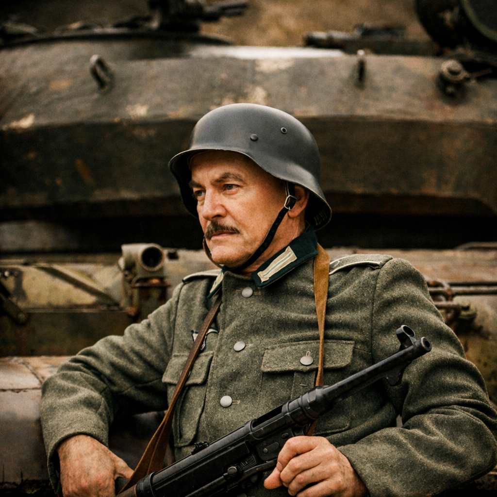
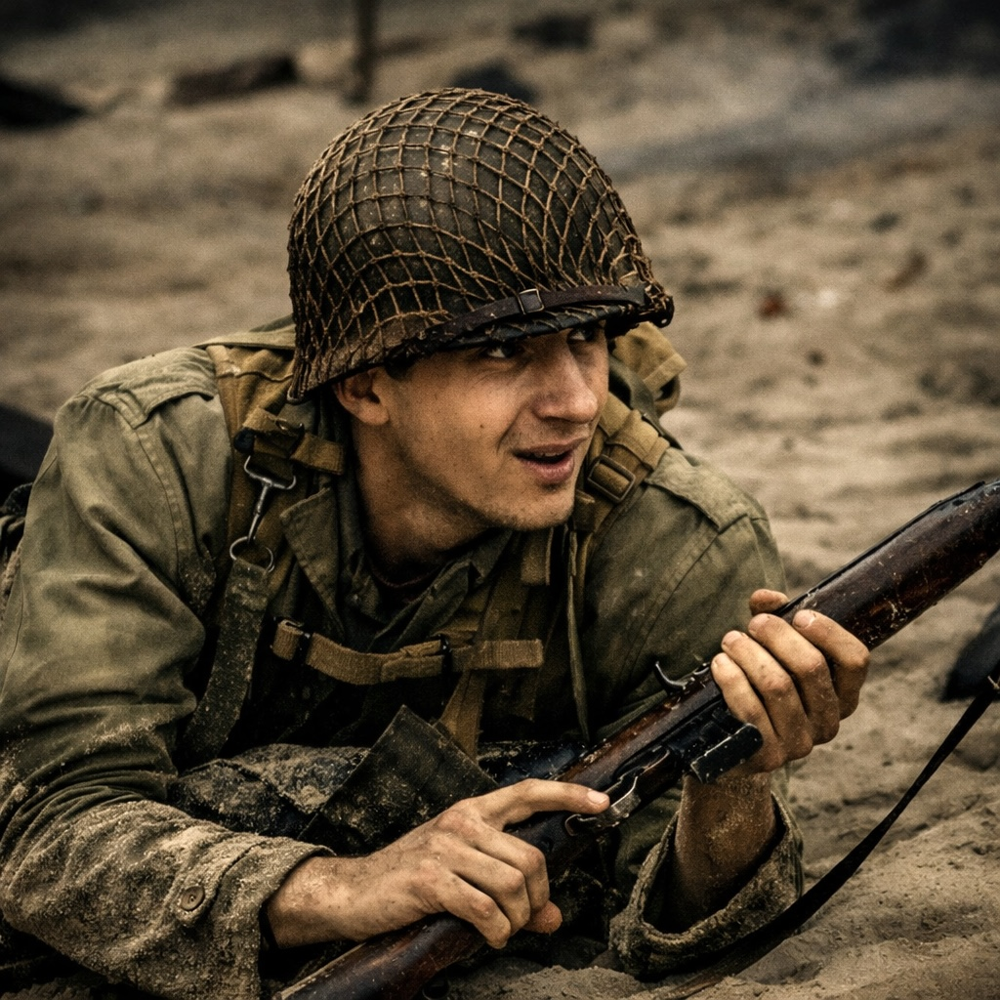
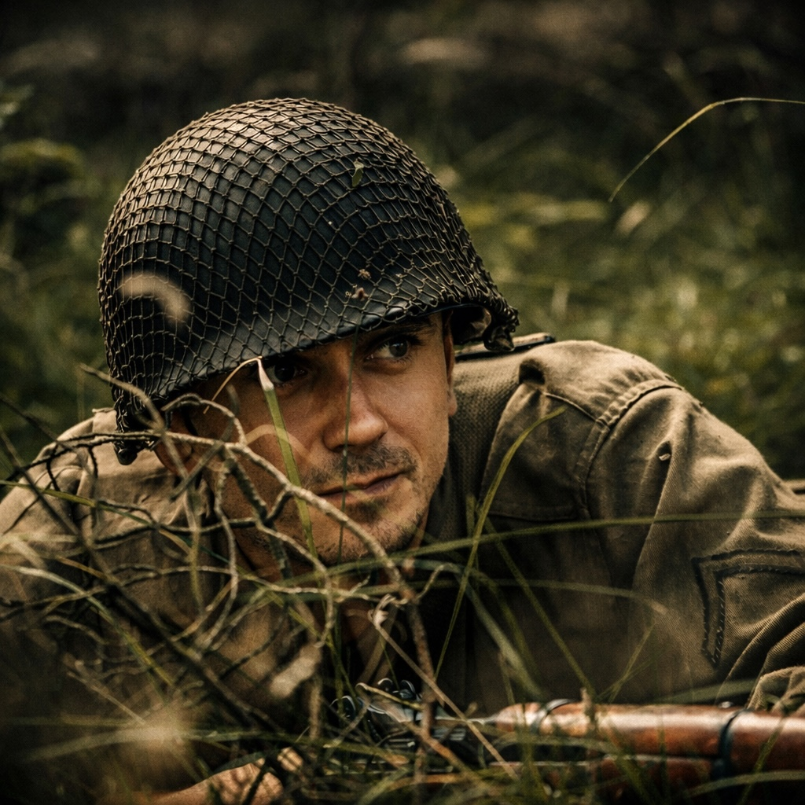
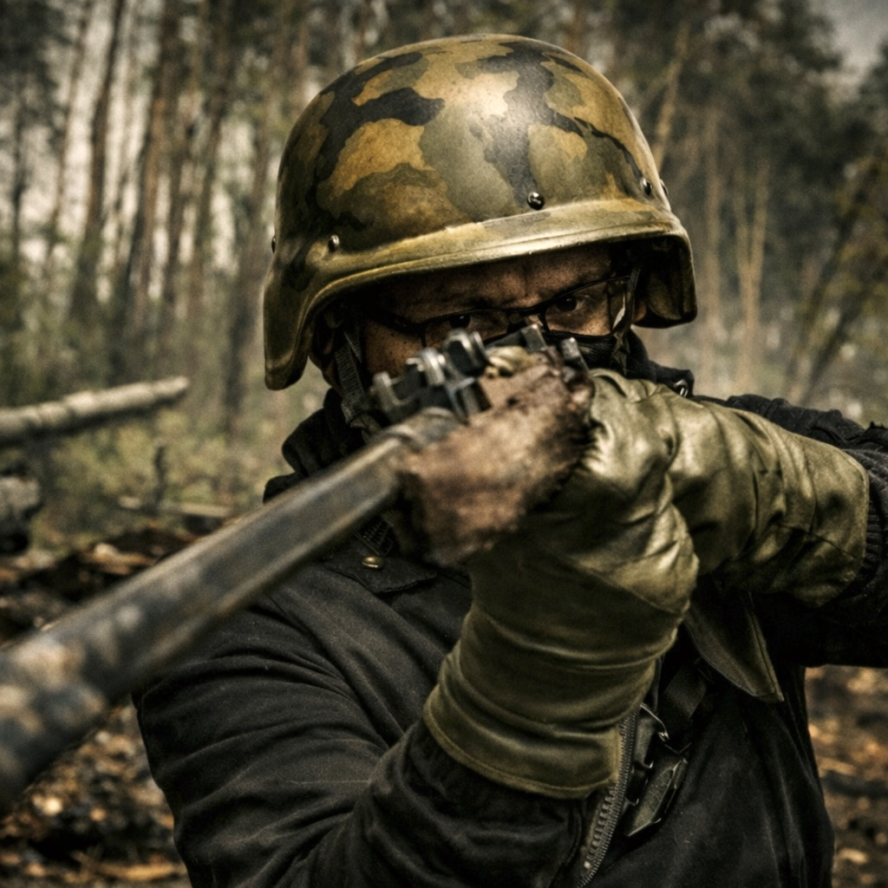

Meet the Cast

Scout Lukas Weber
A young scout who moves ahead of the tank crew to observe enemy positions. His sharp instincts help the team avoid dangerous ambushes.
Function: Recon and early warning.

Captain Hans Mueller
The captain leads the tank crew through dangerous enemy territory. He must make fast decisions to keep the team alive during battle.
Function: Leader of the tank crew.

Officer Michael Carter
The officer manages communication and supports the captain in planning. His calm thinking helps the team stay organized during combat.
Function: Communication and coordination.

Commander Aziz Tooban
The commander is the most experienced member of the crew. He guides the team through the most dangerous situations.
Function: Strategic leader.